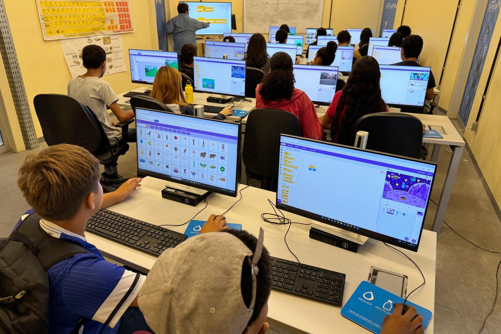
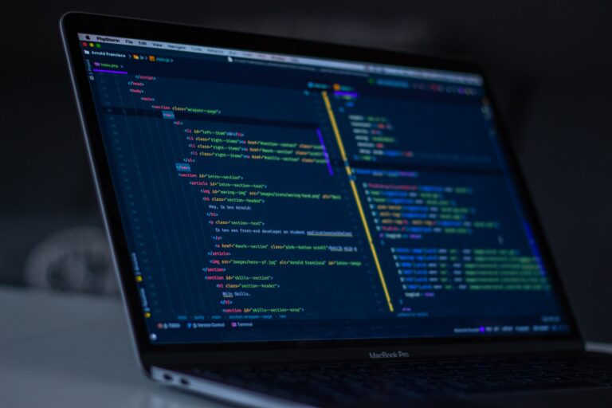
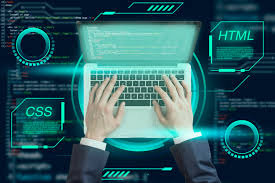

A programação vem se consolidando como uma das habilidades mais importantes da atualidade. Com o crescimento da tecnologia e a digitalização de serviços, profissionais da área de desenvolvimento estão cada vez mais em evidência no mercado de trabalho.
Empresas buscam soluções digitais para melhorar seus processos, o que aumenta a necessidade de desenvolvedores qualificados. Nesse cenário, linguagens como HTML, CSS e JavaScript se destacam como base para a construção de sites e aplicações web.

Além do conhecimento técnico, especialistas destacam a importância da experiência do usuário (UX). Interfaces bem planejadas e fáceis de usar fazem toda a diferença no sucesso de plataformas digitais.
O desenvolvimento front-end, responsável pela parte visual dos sistemas, tem ganhado destaque justamente por conectar tecnologia e usabilidade.
Outro ponto importante é o crescimento do ensino de programação. Cursos online, conteúdos gratuitos e plataformas digitais têm facilitado o acesso ao aprendizado, permitindo que mais pessoas ingressem na área.
Essa democratização do conhecimento contribui para o surgimento de novos talentos e fortalece ainda mais o setor tecnológico.

Especialistas apontam que a tendência é que a programação continue em alta nos próximos anos, acompanhando a evolução de áreas como inteligência artificial, automação e desenvolvimento de aplicações cada vez mais complexas.